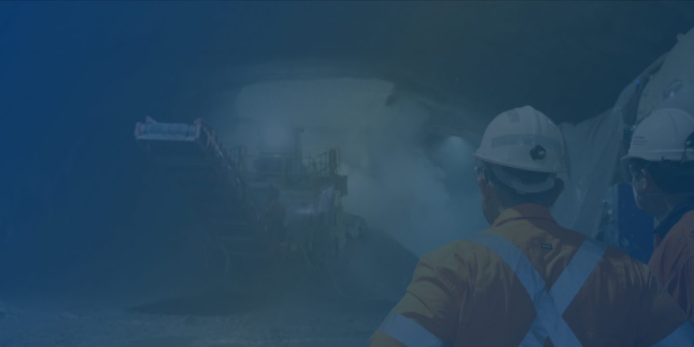
Mining
Mining operational intelligence
Understanding Complex Mining Operations In Real Time
Modern mining operations generate enormous volumes of information every day.
The challenge is not collecting information.
The challenge is understanding how these conditions interact and influence operational performance.
iottag helps mining organisations create a live operational understanding of their operations, supporting safer decisions, improved productivity and stronger operational performance.
Workforce activity
Fleet movement
Equipment performance
Environmental conditions
Production systems
Safety controls
The challenge facing
modern mining operations
Mining operations are becoming increasingly complex.
The challenge is maintaining visibility across these changing conditions while ensuring safe and productive operations
While organisations have more information than ever before, understanding what requires attention remains challenging.
Operational Intelligence helps transform operational complexity into actionable insight.
- Larger fleets
- Distributed workforces
- Greater safety obligations
- Increasing automation
- More environmental monitoring
- Higher production expectations

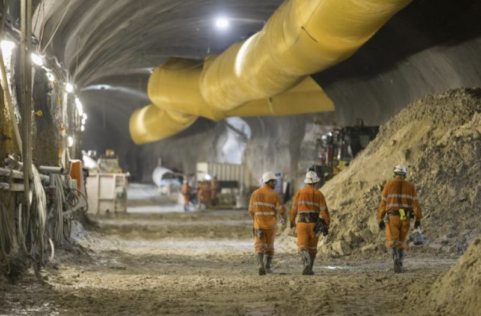
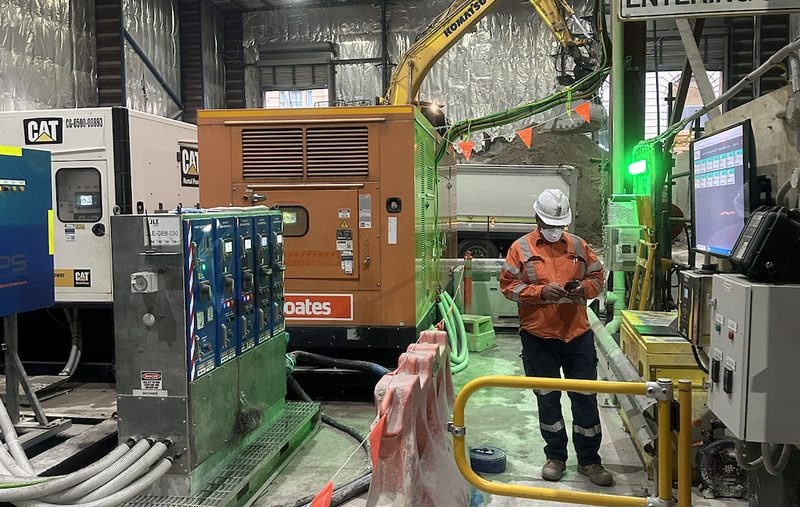
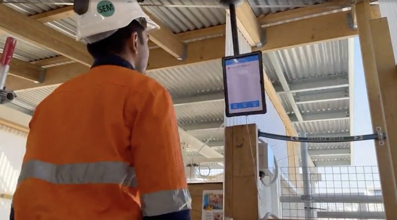
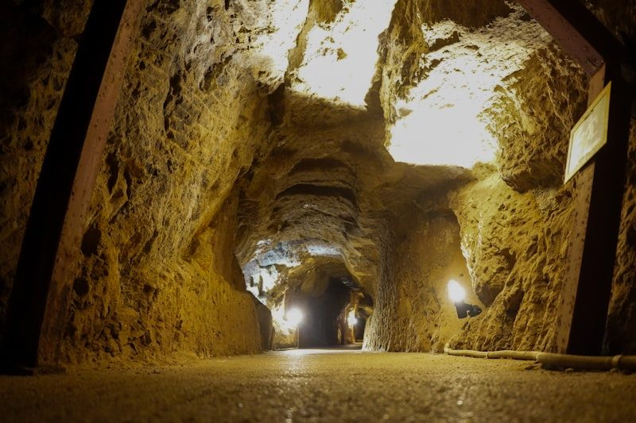
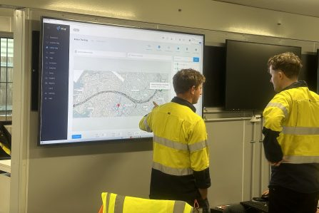
Visibility across the entire mining operation
The Operational Digital Twin creates a live operational representation of the mining environment.
Combining:
Workforce Visibility
Fleet Visibility
Asset Visibility
Environmental Monitoring
Production Systems
Operational Events
Into a shared operational environment
This provides mining teams with a clearer understanding
of what is happening across the operation.
Supporting safer mining operations
Safety outcomes are influenced by changing operational conditions.
The iottag platform supports:
By understanding operational conditions earlier, mining organisations can respond proactively and support safer operations.
Explore: Fatal Risk Management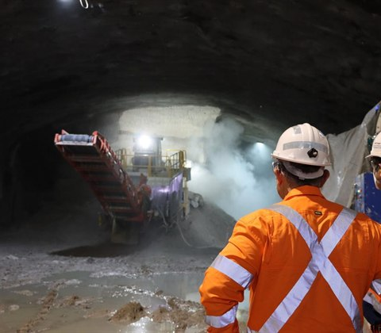
Production intelligence for mining
Production outcomes are influenced by more than equipment utilisation alone.
Production Intelligence helps organisations understand these relationships and identify opportunities to improve performance.
Explore Production Intelligence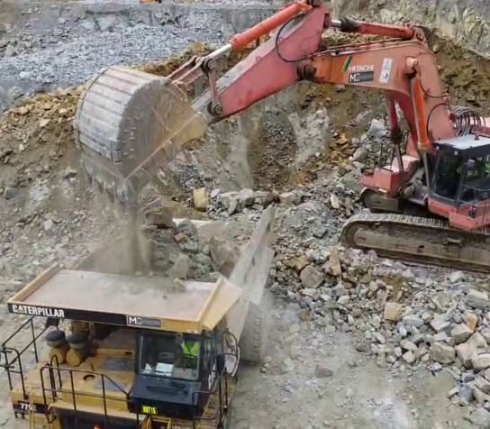
From site operations to corporate visibility
Mining organisations require visibility at multiple levels.
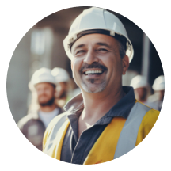
Contractors
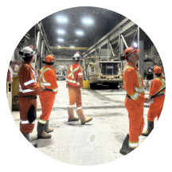
Operations Teams
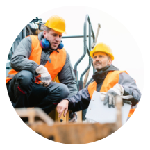
Site Management
Corporate Leadership
Operational Analytics & Benchmarking provides leadership teams with insight into safety, production and operational performance across multiple sites.

Operational intelligence for modern mining
Improve visibility, safety, production performance and decision-making across your mining operation.